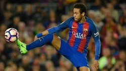
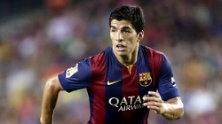

Players
Lionel Messi

Neymar
Luis Suárez
Commentary
Futbol Club Barcelona has won several titles, making it one of the best soccer teams in the world. Some of its titles include the four European Cup titles won in Wembly, Paris, Rome, and Berlin, as well as the FIFA Club World Cup (2009, 2011, 2015).
Lionel Messi is known by many to be the best player in the world. He has great technical skill. He was the youngest player to score a league goal for FC Barcelona, at the age of only 17 years. He was also the lead scorer at the Under 20 World Cup. Messi has played in world cups and came home with a gold medal after playing in the Olympics in 2008.
Neymar began his football career at the age of 11. In 2014-2015, Neymar was named the second best scorer in Barcelona after Messi.
Luis Suárez first played in Montevideo with the Club Nacional de Football. He then moved to Holland at the age of 19 and became one of the most well known Dutch football players. Suárez first played for FC Barcelona on October 25, 2014, against Real Madrid.
2016/2017 Statistics
Name
Goals
Total Shots
Shots on Target
Starts
Sub Ins
Fouls Committed
Lionel Messi
49
232
94
49
2
24
Neymar
15
129
55
41
0
52
Luis Suárez
35
156
73
50
1
61